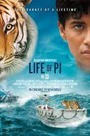
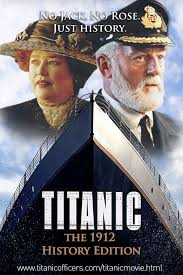

Now Showing
-
Movie 1

Showtimes:
- 10:00 AM
- 1:00 PM
- 4:00 PM
The overwhelming devastation caused by the mad Titan Thanos has left what remains of the Avengers reeling. For a while, all hope seems lost... until an opportunity to reverse the damage is presented. Now, the team must assemble once more and do whatever it takes to restore the universe and bring those they lost back.
About -
Movie 2
Showtimes:
- 11:00 AM
- 2:00 PM
- 5:00 PM
A fantasy which won the Booker Prize in 2002, Life of Pi tells the magical story of a young Indian, who finds himself shipwrecked and lost at sea in a large lifeboat. His companions are four wild animals: an orangutan, a zebra, a hyena, and, most notably, Richard Parker, a tiger.
About -
Movie 3
Showtimes:
- 12:00 PM
- 3:00 PM
- 6:00 PM
Incorporating both historical and fictionalized aspects, it is based on accounts of the sinking of RMS Titanic and stars Kate Winslet and Leonardo DiCaprio as members of different social classes who fall in love aboard the ship during its ill-fated maiden voyage.
About